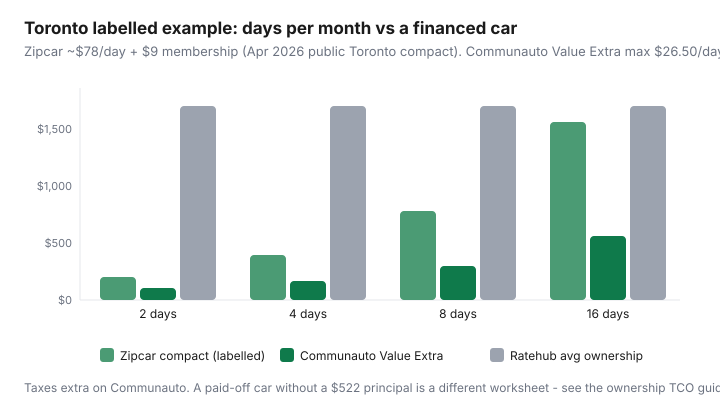

Transportation · Canada
Communauto vs Zipcar vs owning a car in Canada: break-even math for city drivers
The expensive car in a Canadian city is often not the one that goes to work. It is the second hatchback that does IKEA, the airport run, and eight quiet weeknights in a $200 stall. Communauto and Zipcar sell hours with gas and insurance baked in. Owning sells a monthly stack that Ratehub puts at $1,373 for a blended Canadian car in 2026. The skill is matching days you actually drive to the product, not arguing about which app logo you like.
This is operator math for Montréal, Toronto, Ottawa, and other cities these fleets actually serve — not a U.S. peer-to-peer rant. For the full ownership stack see how to calculate the real cost of owning a car. For the commute that should not need a car at all, start with transit and mixed modes.
Disclosure: Car-share memberships and referral offers are opportunity types. Saving Optimizer may earn a commission if we later add partner links. We do not currently claim Communauto or Zipcar partnerships. Compare live fee schedules on the operator sites before you join.
Key takeaways
- Rates usually include fuel, insurance as defined in the contract, and home-stall parking. Membership, tax, bonds, and km overage are extra.
- Zipcar Toronto public copy (2026): $9/month or $90/year; about $9/hour or $78/day on a compact; 200 km/day then $0.50/km; $25 application fee.
- Communauto Toronto fee schedule effective 15 Jun 2026: Open is free but ~$16.10/hour (max $60 first day); Value Extra is $30/month + $3.75/hour (max $26.50/day) with a $500 refundable bond.
- Four Zipcar compact days ≈ $321 vs $1,373 average ownership. Sixteen Zipcar days ≈ $1,257 — now you are in financed-car territory.
- The real target is often the second household car, not the only vehicle a tradesperson needs at 6:15 a.m.
What membership rates typically include (gas, insurance, parking)
Both operators sell an all-in hour so you stop pretending “just gas” is the cost of a car. Typical inclusions (confirm the current member contract):
- Fuel or charging — Zipcar’s Toronto page says gas, insurance, and 200 km/day are included. Communauto station-based trips include a km package that varies by plan; extra km are billed.
- Insurance / damage protection — included at a standard deductible. It is not a personal Ontario auto policy you can shop. If you already have a car, ask your broker whether car-share driving is excluded (educational question, not a coverage opinion).
- Parking at the home stall — you do not pay the downtown garage for the hours the car sits in its reserved spot. You may still pay city lots if you park away from the stall on a trip.
- Maintenance and roadside — their problem, not your sinking fund.
Typical exclusions: tickets, extra cleaning, smoking fees, missing the return window, km overage, FLEX (one-way) premiums on Communauto, taxes on Communauto Toronto (the PDF says taxes extra), Zipcar application fee. Open plans without a bond look “free” until the hourly rate shows up.
Hourly/daily cost profiles for errands vs weekend trips
| Trip | Zipcar compact | Communauto Open | Communauto Value Extra |
|---|---|---|---|
| 2-hour weekday errand | ~$18 + $9/mo membership | ~$32.20 (2 × $16.10) | $7.50 + $30/mo (if you already pay it) |
| 8-hour day / IKEA | Daily ~$78 (beats 8 × $9) | Hits $60 first-day max + km | Hits $26.50 day max + 34¢/km |
| Weekend 24-hour | ~$78–$156 depending on calendar day rules | First day $60 + extra day $55 (Open) + km | $26.50/day + km; weekend surcharge may apply |
| Km package | 200 km/day; $0.50 after | 75 km included on Open station-based, then 34¢/km | 34¢/km on Value Extra (no large included bundle on the cheap hourly) |
Communauto Open is the right plan if you drive twice a year. Value Extra is the right plan if you drive most weekends and will recoup the $30 + $500 bond. Zipcar is the right plan if you want a predictable daily cap and 200 km without reading a five-column PDF. Montréal members often live on Communauto FLEX for one-way trips — Toronto FLEX exists but inventory is thinner; price FLEX on that city’s schedule, not Toronto station-based.
Ownership TCO reminder: insurance, parking, maintenance
Ratehub’s April 2026 average (updated 29 Apr 2026): $1,373/month cash cost, including $522 principal, $192 interest, $200 parking, $164 insurance, $165 gas, $120 maintenance, $10 admin. A paid-off car drops the $714 loan line and leaves roughly $659 plus your parking. Downtown Toronto condos and monthly garages routinely beat $200; a suburban driveway can be $0. That is why national averages lie in both directions. Build the worksheet in the ownership TCO guide before you compare apps.

City coverage differences: Montréal, Toronto, others
- Montréal / Québec City: Communauto is the default car-share, with dense station-based and FLEX. Zipcar may exist but is not the local habit. Check neighbourhood pods before you sell a car in Ahuntsic versus downtown.
- Toronto / Hamilton / Ottawa–Gatineau: Both Communauto and Zipcar operate. Downtown and west-end Toronto usually have mixed inventory; inner suburbs can be Zipcar-only or empty. Communauto FLEX passes bought in Ontario are valid in Ottawa-Gatineau, Hamilton, and Toronto (their fee PDF note) — still check local km rules.
- Vancouver: Zipcar plus local co-ops and one-way products (Evo, Modo) that are out of this comparison. Do not assume a Toronto rate in Kitsilano.
- Halifax and smaller Communauto cities: Membership can travel; inventory will not. Open a map, not a national ad.
Coverage is the constraint that kills car-lite plans: if the nearest car is a 25-minute walk on a Sunday in February, you will Uber and then “need” the second car again.
Break-even km/hours per month worksheet
Worked examples (labelled, Toronto, before tax on Communauto):
- 2 days/month Zipcar compact: 2 × $78 + $9 = $165. vs $1,373 ownership. vs ~$659 paid-off running costs.
- 4 days: $312 + $9 = $321.
- 8 days: $624 + $9 = $633 — near a paid-off car with $200 parking.
- 16 days: $1,248 + $9 = $1,257 — approaching financed ownership; a cheap used car may win if you need that many days.
- Value Extra, 4 days at daily max: 4 × $26.50 + $30 = $136 plus km. This is why Montréal-style heavy users like Communauto plans. You must actually use the plan; a $500 bond sitting idle is a poor GIC.
| Item | Last month | Car-share quote | Keep/drop car |
|---|---|---|---|
| Days a car moved | |||
| Hours (errands vs full days) | |||
| Km | |||
| Parking you could drop | |||
| Insurance on that vehicle |
If last month the car moved four days and sat in a paid stall the rest, the stall and insurance are the savings, not the gas.
When a second household car is the real target to cut
Keep a vehicle when it does work a bus and a hatchback-share cannot: tools, off-shift timing, caregiving with equipment, rural last kilometres. Cut the vehicle that exists because “we might need it.” That car still needs insurance, winter tires, and a place to sleep.
Sequence that does not strand you:
- Join one operator. Do three real trips (grocery plus one weekend) while both cars still exist.
- Park the candidate car for 30 days. Pay it, but do not drive it. Track every time you wanted it.
- If the share covered those wants, cancel insurance at a renewal-friendly date, sell, and drop the stall.
- Do not sell in week one of a January cold snap before you have seen inventory.
Hybrid strategy: transit pass + car-share
The cheap Canadian urban stack is a fare cap or pass for the commute (TTC 47-trip cap in Toronto, Compass or OPUS elsewhere) plus car-share for the bulky trips. Count the transit product and the share membership as one mobility bill. A $155 TTC cap + $9 Zipcar + two day trips (~$156) = about $320 — still a fraction of Ratehub’s financed average, and competitive with a paid-off car once parking is real.
Peer-to-peer rentals (Turo-style) can look cheaper per day and then add insurance confusion and owner cancellation. They are a weekend tool, not a second-car replacement plan, unless you enjoy reading two contracts at 10 p.m.
Sources & date stamps
- Communauto Toronto fee schedule, effective 15 Jun 2026 (Open through Value Extra; weekend surcharge; bonds; FLEX note).
- Zipcar Toronto / Zipcar Canada pages — $9/month or $90/year, 200 km/day, $0.50/km overage, $25 application fee, gas and insurance included in public copy.
- Ratehub, “What is the total cost of owning a car?”, updated 29 Apr 2026 — $1,373/month average.
- Operator city maps for Montréal, Toronto, Ottawa, Hamilton (inventory changes; check before you drop a stall).
Frequently asked questions
Is car-share cheaper than owning in Canadian cities?
For a car you drive a handful of days a month, usually yes — especially versus a financed car. Ratehub’s 2026 average ownership is $1,373/month. A labelled Toronto Zipcar compact at ~$78/day plus $9 membership is about $321 for four days. A paid-off car with cheap parking is a closer fight.
What is actually included in the hourly rate?
Typically gasoline or charging, insurance/damage protection as defined in the member contract, and designated parking at the home stall. You still pay membership, tax (Communauto lists taxes extra), application fees, and per-km overage. Read the live fee schedule.
Communauto or Zipcar in Toronto?
Zipcar is simple: one hourly/daily price, 200 km/day, $9/month or $90/year. Communauto is cheaper per hour on Value plans if you will use it, but Open is expensive per hour and Value Extra wants a $500 refundable bond plus $30/month. Match the plan to hours, not the logo.
Can I drop my second car?
That is the high-value use. Keep the car that does shift work or tools. Replace the ‘Costco and cottage weekend’ car with transit + car-share. Confirm insurance and registration cancellation dates so you do not pay for a month of a parked vehicle.
Does this work in winter?
Stations can ice up and weekend demand spikes. Keep a transit plan that works in January. Car-share is a substitute for ownership, not for a snow day with no inventory nearby.